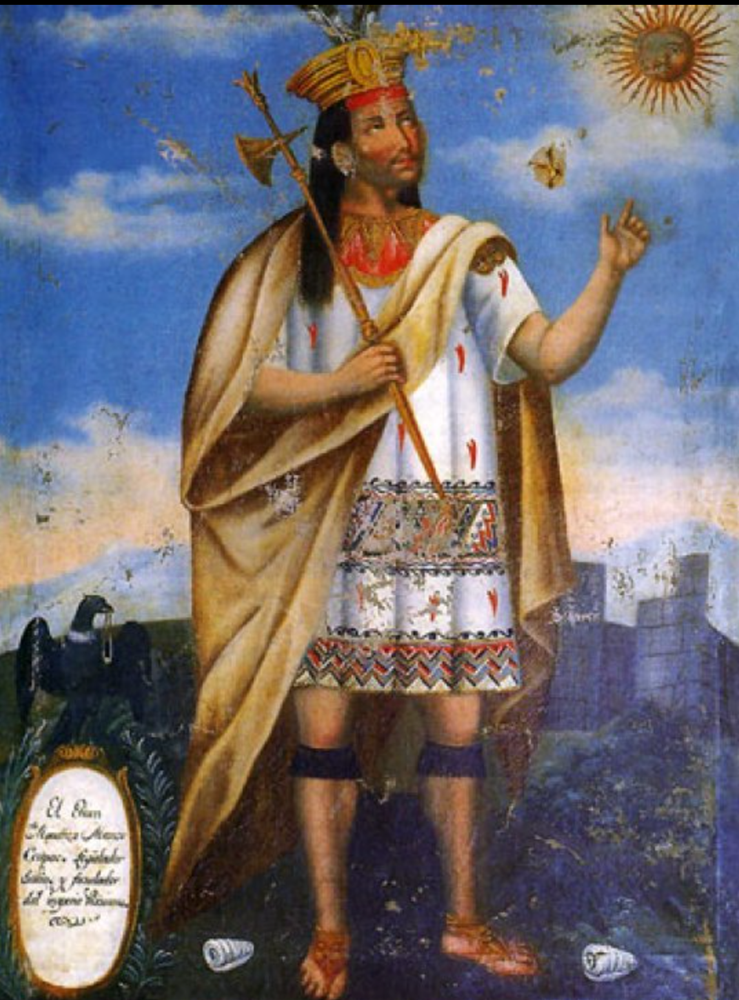

Qullasuyu
The Southern High Plains
The Southern High Plains
Often when traveling through Tawantinsuyu, Tampus, a form of roadside lodging gave people a place to stay
While there were different kinds based on the class of people they accomodated, most featured the same four parts, including:
What would talking about the Andes Mountains and its history be without speaking on Llamas? Llamas have been used for all sorts of purposes such as carrying items long distances and as a food source since time immemorial.
Llamas have also held extreme symbolic importance in Andean cultures often buried with the dead and the Inkan deity Urcuchillay often took the shape of a multi-colored Llama.
While often confused for one another, it's worth noting that Llamas and Alpacas are different species.
Qullasuyu's silver and gold mines, metals considered sacred by the Inkans, were a contributing factor to their desire to expand into the region. Unsurprisingly, the use of these metals was restricted, only allowed for rulers, priests and religious ceremonies.
Manco Capac, the Founder of Inkan civilization, Wearing Gold.
Congrats on learning about this region! Keep learning about the others!
Contisuyu
Antasuyu
Antisuyu